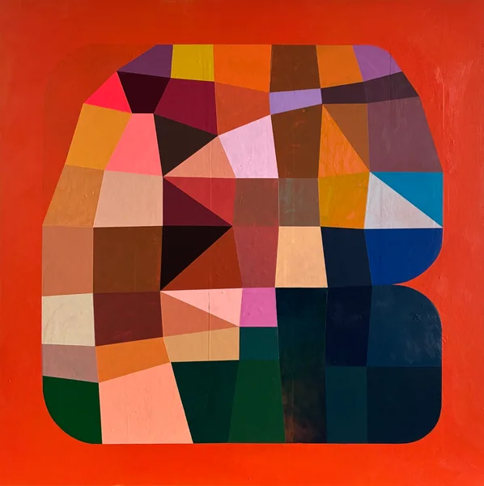
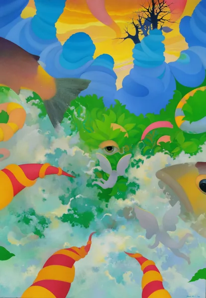
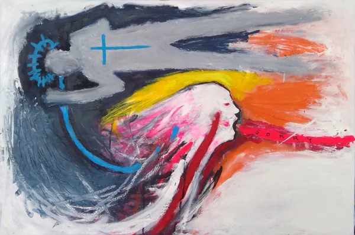

Mobile Gallery · a new PlotArt service in development
The gallery comes to you.
Imagine seeing original artwork on your own walls, in your own light, before deciding whether to buy.
Mobile Gallery will connect you with independent Irish galleries that offer home viewings, art on approval and personal consultations. We’re building the gallery network now, so appointments can’t yet be arranged through PlotArt.

- Original artworkOriginal work, offered by the gallery that represents it.
- Your real homeSeen on your walls and in your light, not in a showroom.
- Personal discoveryStart from your room, your taste and your budget.
- Confidence to decideSee it in place before you commit to anything.
- Independent Irish galleriesGalleries you can visit, with people you can talk to.
How it works
From a bare wall to a decision.
Four steps. You stay in control of each one, and you can stop at any of them.
Discover
Explore participating galleries and the kinds of work they show.
Arrange
Connect with a gallery that offers a home viewing or consultation that suits you.
Experience
See selected artwork in your own surroundings, where the gallery offers this service.
Decide
Choose whether to buy, in your own time and without pressure.
Home viewings, trial periods, appointments, transport, insurance, deposits, any charges and availability all depend on the individual gallery. Each gallery’s profile will say what it offers before you arrange anything. PlotArt will introduce you; the gallery arranges the visit and handles any sale. Appointments can’t yet be arranged through PlotArt while the gallery network is being built.
Find art for your home
Tell us about your room.
Choose what matters to you. Galleries will appear here once they have joined and confirmed what they offer.
Galleries for your home
0 matching galleriesMeet the galleries
Independent Irish galleries.
Galleries we would like to welcome. No gallery has formally joined Mobile Gallery: participation is unconfirmed. Locations and introductions come from each gallery’s public information.
For galleries
Bring your gallery to PlotArt.
Does your gallery offer home viewings, artwork trials or personalised art consultations?
We’re building a network of independent Irish galleries helping people discover original artwork in their own homes.
We’d love to hear from you.
Prefer to copy it? hello@plotnua.ie
- Your service, your termsYou keep your own bookings, prices, sales, delivery and hanging. PlotArt introduces; it doesn’t sell your work or take payment.
- Considered introductionsHomeowners will arrive with their county, style, budget and the service they want, so first conversations start in the right place.
- A profile that shows your gallery wellYour gallery, artists, home-viewing service and coverage, presented in PlotArt’s editorial style and approved by you before anything is published.
- Room for many galleriesMobile Gallery is built for galleries across the island of Ireland, not around any one gallery.
No commercial arrangement has been agreed with any gallery. Any terms would be discussed with each gallery individually and agreed in writing.
Artists open to home viewings
These artists have said they’d welcome conversations about home viewings arranged through participating galleries. No gallery’s participation has been confirmed yet. Every opportunity is discussed and agreed individually with the artist. Being listed is not a booking, and nothing is confirmed until it’s agreed.
 Daniel ChesterPainter
Daniel ChesterPainter
Naomi Taitz Duffypainter Karen EbbsPainter, Colourist, Sculptor, Immersive Installation
Karen EbbsPainter, Colourist, Sculptor, Immersive Installation Olivia JonesVisual Artist
Olivia JonesVisual Artist Rasher Mark KavanaghPainter
Rasher Mark KavanaghPainter
Paul KerrPainter Nick MunierPainter
Nick MunierPainter
PIGSYMixed Media Painting Anna Marie SavagePainter
Anna Marie SavagePainter Carolyn WalshPAINT, PRINT, PHOTOGRAPHY
Carolyn WalshPAINT, PRINT, PHOTOGRAPHY
Three ways to meet art on PlotArt
Each starts somewhere different.
Artist-led
Artists’ Gallery
Curated contemporary work, shown by the artists who made it. You browse their galleries and contact the artist.
Visit the Artists’ Gallery →Homeowner-led, gallery-supported
Mobile Gallery
You start with your home. A gallery brings the art to you, or helps you choose, and you decide.
Homes that host art
Living Gallery
Original work displayed and hosted in participating homes, for others to discover.
About the Living Gallery →New to living with original art? Our guide covers walls, light, care and buying.Read A Home for Art →